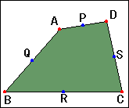
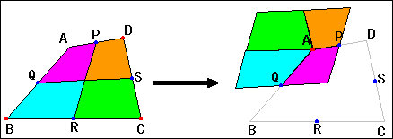
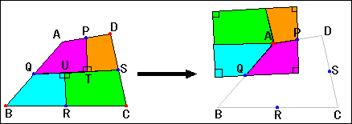
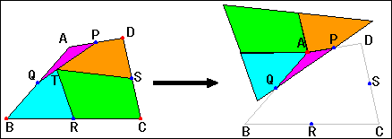

|
Let's transform quadrilateral ABCD to parallelogram , rectangle, or triangle . The point P ,Q ,R and S are midpoints of AD ,AB ,BC and CD respectively. |
 |
How to transform quadrilateral ABCD |
|
|
We divide ABCD into four pieces by PR and QS ,and move the pieces like the following figure. | |
|  | |
|
In the following figure ,PT and RU are perpendicular to QS .We divide ABCD into four pieces by PT ,RU and QS ,and move the pieces like the following figure. | |
|  | |
|
We put the point T on PQ .We divide ABCD into four pieces by PQ ,RT and ST ,and move the pieces like the following figure. | |
|  | |
| Let's consider we can transform like them. | |
How to use this applet.1.Drag A,B,C and D to change ABCD . 2.Press "define" button to go to next step. 3.Check "to Parallelogram" ,"to Rectangle" or "to Triangle" to select the mode. 4.Drag red the point to transform to the type that you selected. |
|
Drag red point. |